- Módulo: Sistemas Operativos
- Título del trabajo NFS
- Componentes del grupo: Eliot Farrais García
- Curso Académico: 2014/2015
- Fecha de entrega: 9 de marzo de 2015, 08:10
Instalamos con el comando apt-get los siguientes archivos:
apt-get install -y samba samba-common smbclient samba-doc cifs-utils
Guardamos el viejo fichero y creamos un nuevo de la configuracion de Samba
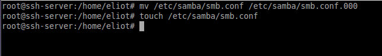Modificamos el fichero smb.conf
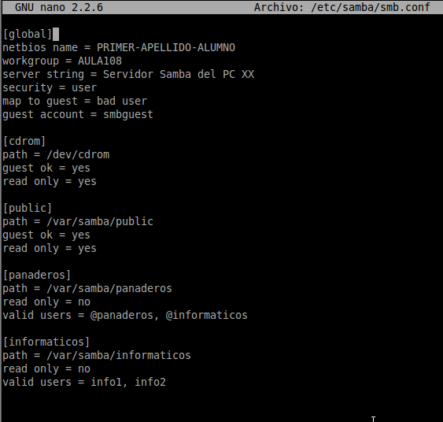Añadimos usuarios y grupos para samba
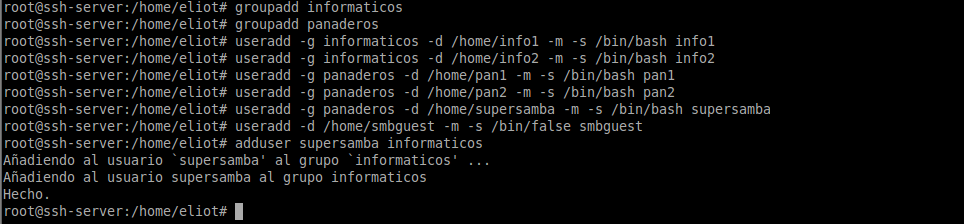Creamos directorios y cambiamos el usuario propietario para que quede como la imagen, con el comando chown
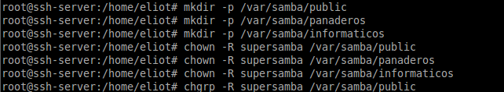Modificamos tambiñen los grupos con chgrp. Quedando algo así
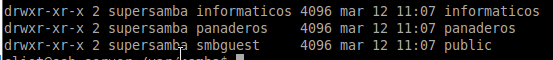Añadimos los usuarios a samba
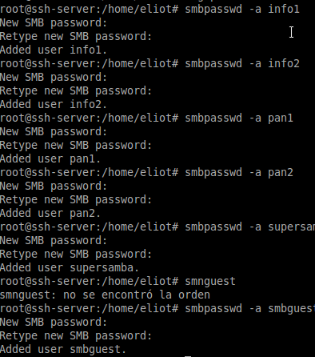Nos quedaría algo así
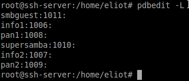Miramos el estado de samba, y sinó está iniciado el servicio, lo iniciamos
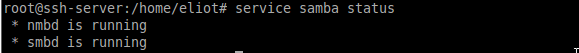Accedemos con la Ip del servidor a los recursos
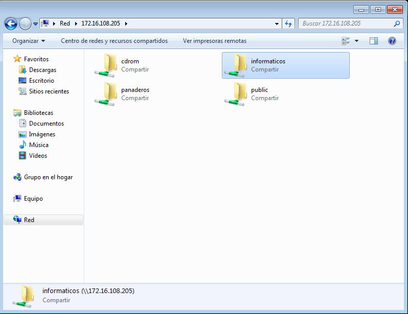Intentamos entrar con cdrom, ero no nos deja dado que no existe una unidad cdrom en el servidor
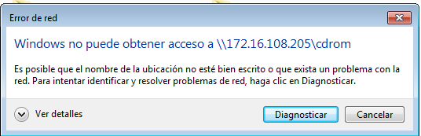Intentamos acceder con info1 a informáticos
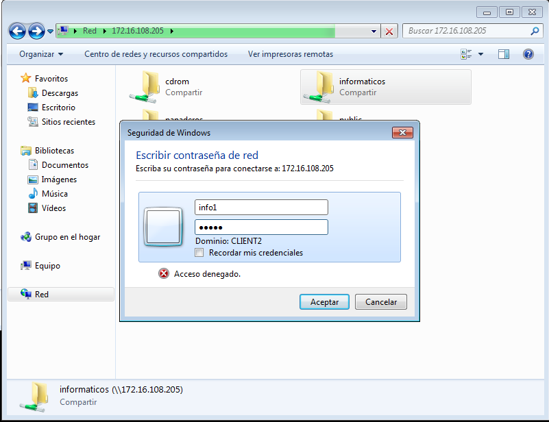